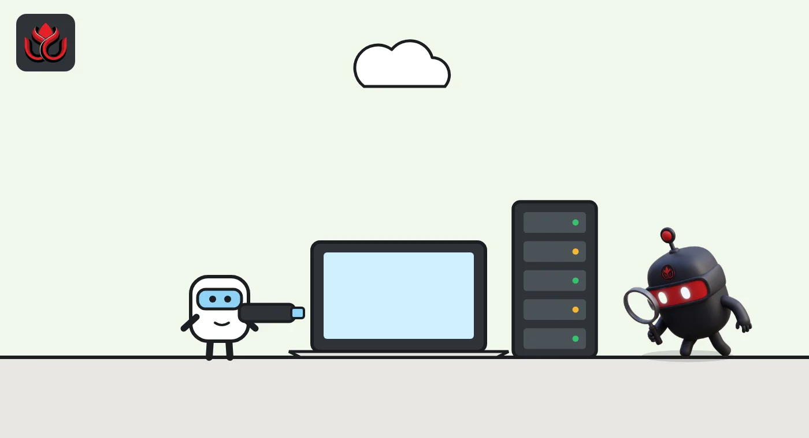

Nasdaq will put $100 million into Kraken's parent, with tokenized stocks due in 2027
Nasdaq's venture arm is backing Payward, and the two plan to link Nasdaq Equity Tokens, due in the second quarter of 2027, with Kraken's xStocks. Payward will also adopt Nasdaq's market surveillance technology.
Key points
- On September 10, 2026, Nasdaq Ventures agreed to invest $100 million in Payward, Kraken's parent. No valuation was disclosed.
- Nasdaq plans to launch Nasdaq Equity Tokens in the second quarter of 2027 and link them with Payward's xStocks.
- Payward will run Nasdaq's market surveillance software across its venues, and has a separate tokenization deal with the London Stock Exchange.
What Nasdaq agreed
Nasdaq announced on September 10, 2026, that its venture arm, Nasdaq Ventures, has agreed to invest $100 million in Payward, the parent company of the Kraken exchange. Payward confirmed the deal in its own release. Neither company disclosed the valuation, the size of the stake or any board seat.
The investment deepens a relationship that started in March 2026. That month, Nasdaq announced plans for an equity token design built in coordination with Payward. Nasdaq said the design puts listed companies at the center of ownership rights, transparency and governance.
Nasdaq President Tal Cohen said the deal reflects Nasdaq's view that Kraken "can play an important role" in building market infrastructure. The agreement also follows the August launch of Nasdaq's Digital Liquidity Networks (DLN) business, which brings together liquidity platforms, tokenization tools and fintech services for digital assets.
What are Nasdaq Equity Tokens?
A tokenized stock is a digital token on a blockchain that represents a share of a company. Nasdaq calls its version Nasdaq Equity Tokens, or NETs. Nasdaq said it expects to launch NETs in the second quarter of 2027.
The two companies will connect the NET design with Payward's xStocks ecosystem. xStocks are Payward's tokenized shares, each backed one-to-one by a real share. The next phase of work covers distribution, settlement and trading, including the ability to move between NETs and xStocks.
Payward co-CEO Arjun Sethi said the next step is to move tokenized shares onto rails that do not close, with shareholder rights intact, according to Payward. Nasdaq contributes regulated market infrastructure and surveillance tools. Payward brings Kraken's crypto trading venue and the xStocks technology.
Nasdaq's surveillance tools come too
The quieter part of the deal may matter just as much. Payward will adopt Nasdaq's market surveillance technology across its trading venues. Payward listed those venues as crypto, equities, tokenized equities, futures and options.
Surveillance software watches trading for signs of manipulation, such as spoofing (placing fake orders to move prices) or wash trading (trading with yourself to fake volume). Regulated stock exchanges are required to run it. For a crypto company that wants to list tokenized shares next to traditional ones, using the same tools as a major stock exchange is a way to show regulators it takes market integrity seriously.
How Payward is doing
Payward does not publish full financial statements, but it does release quarterly highlights. For the second quarter of 2026, it reported adjusted revenue of $508 million, up 17% from a year earlier, and adjusted EBITDA of $23 million.
Trading activity was weaker. Total platform transaction volume was $310 billion, down 18% year over year, as spot crypto volumes fell across the industry while equities and tokenized equities grew. Assets on the platform were $40 billion. Funded accounts rose 42% to 6.6 million, the most in the company's history.
Payward, Q2 2026 highlights
US$ billion
Source: Payward, Q2 2026 Financial Highlights (August 14, 2026)

Payward's other exchange deal, in London
Nasdaq is not Payward's only exchange partner. On September 1, 2026, Payward and the London Stock Exchange announced a tokenization partnership. Payward said it will offer the 100 largest London-listed companies as xStocks. Subject to regulatory approval, the London Stock Exchange will then list xStocks and support trading on LSE 24, its planned 24-hour trading venue. xStocks are not currently available to UK-based investors.
The xStocks business has grown fast. In the London release, Payward said xStocks had passed $40 billion in total volume, more than $20 billion of it settled on-chain, across more than 200,000 holders. On October 28, Payward said xStocks passed $1 billion in assets under management.
For Nasdaq, the deal adds a crypto-native distribution partner as exchanges look for ways to offer round-the-clock trading. For Payward, it brings a link to the exchange where many of the most-traded US shares are listed.
Timeline
Nasdaq announces its equity token design in coordination with Payward
Nasdaq launches its Digital Liquidity Networks business
Payward reports Q2 adjusted revenue of $508 million
Payward and London Stock Exchange announce tokenization partnership
Nasdaq Ventures agrees to invest $100 million in Payward
Payward says xStocks passed $1 billion in AUM
Expected launch of Nasdaq Equity Tokens
LC Insight analysis
This section is our reading of the facts above, not a statement of fact.
- We think the endorsement matters more than the $100 million. A major listed exchange choosing Kraken's parent as its tokenized stock partner sets Payward apart in a crowded field.
- Rivals selling tokenized stocks with fewer rights or weaker oversight will feel it. If NETs launch on time, investors will start asking what their tokens actually entitle them to.
- Adopting Nasdaq's surveillance tools is groundwork for regulators. We expect it to count for more than the cash when NETs and the London listing need approval.
What's next
- Regulatory approvals needed for Nasdaq Equity Tokens
- Approval for xStocks trading on LSE 24
- Any public IPO filing by Payward
- Payward's Q3 2026 highlights
Disclaimer. This article is based on public information and the sources listed below as of the update time shown. It is for information only and is not investment, legal or tax advice. Figures may change as companies and authorities publish new data.
Sources
- Nasdaq newsroom, Nasdaq advances always-on markets and tokenized equities strategy with agreement to invest in Payward (September 10, 2026)
- Payward, Payward deepens relationship with Nasdaq (September 10, 2026)
- Payward, Q2 2026 Financial Highlights (August 14, 2026)
- Payward, Payward and London Stock Exchange to partner on equity tokenization (September 1, 2026)
- Payward, xStocks surpasses $1 billion in AUM (October 28, 2026)